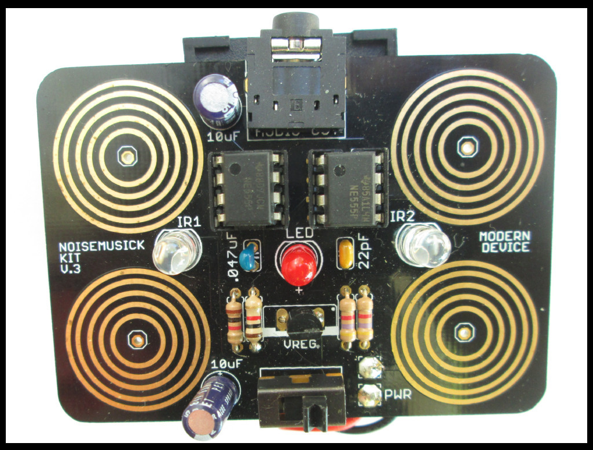

The 555 Noisemusick Kit is a kind-of musical instrument that generates raunchy square wave noise from two 555 oscillators. The circuit is controlled by varying the amount of infrared light hitting the board (like an optical theramin) and injecting the natural resistance of your body into the circuit via four touch points. Squonky fun for the whole family!
Version 2 of the 555 Noisemusick kit is done! Here are the changes from version 1:
- Larger, friendlier solder pads!
- An on/off switch!
- A power indicator LED!
- Generally improved board layout
- Oh yeah: a new name!
The 555 Timer is one of the oldest integrated circuits still available. It’s also one of the few ICs you can buy at the mall! Its hardiness — and the fact that you can drive a speaker directly from the output on pin 3 — have made it a natural choice for electronic music experiments in noise since the seventies. The 555 Noisekit utilizes two 555 timers.
The Noisemusick Kit is a lot like the
Atari Punk Console, although it was created before I even knew about that project. There’s also a very similar schematic in Forrest Mims’ excellent
555 Timer Mini-notebook. The touchpads are inspired by the touch sensitive version of Jessica Rylan’s
BPNG kit.